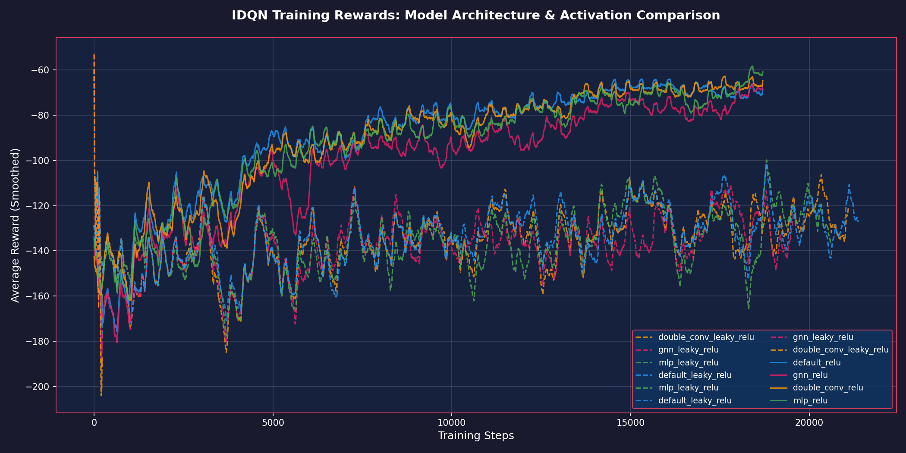
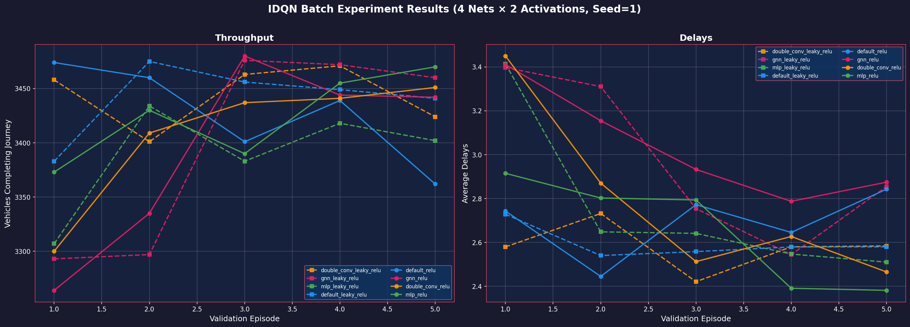

Date: Feb 15, 2026
Agent: IDQN (Independent Deep Q-Network)
Environment: BB5B (Malaysia Map)
Experiment Group: Batch Seed 1 (8 Variations)
This experiment explores the impact of neural network depth, width, and connectivity—combined with varied activation functions (ReLU vs. LeakyReLU)—on traffic signal control efficiency. We evaluate throughput and average vehicle delays in the Malaysian BB5B map.
The IDQN (Independent Deep Q-Network) agent treats each intersection as an independent Reinforcement Learning entity, allowing for decentralized control and scalability within the traffic network.
These runs can be viewed in the Neptune Dashboard.
| Run ID | Net | Activation | Seed |
|---|---|---|---|
| TEN-24 | mlp | relu | 1 |
| TEN-25 | double_conv | relu | 1 |
| TEN-26 | gnn | relu | 1 |
| TEN-27 | default | relu | 1 |
| TEN-32 | default | leaky_relu | 1 |
| TEN-33 | mlp | leaky_relu | 1 |
| TEN-34 | gnn | leaky_relu | 1 |
| TEN-35 | double_conv | leaky_relu | 1 |
We tested four distinct neural architectures, each integrated with both ReLU and Leaky ReLU (slope=0.01) activations.
The plot below shows the average reward (mean of INFMain, PBB, and SIRIM junctions) smoothed over training steps.

Observation: mlp_relu and double_conv_relu show the most stable upward trajectories. gnn variants show higher variance during early training but converge similarly to the base models.
Metrics extracted across 5 validation episodes.

| Model Combination | Throughput (Veh) | Delay Index (TTI)* |
|---|---|---|
| MLP + ReLU | 3470 | 2.38 |
| GNN + Leaky ReLU | 3460 | 2.85 |
| Double Conv + ReLU | 3451 | 2.47 |
| Default + LeakyReLU | 3441 | 2.58 |
| Default + ReLU | 3362 | 2.84 |
*Note: Delay Index (Travel Time Index) = Average Ratio of Actual Travel Time to Free Flow Time. Lower is better. A value of 2.38 means travel takes ~2.4x the ideal time. This metric was previously labeled "Avg Delay (s)" but inspection confirmed it is a ratio.
For comparison with other agents (IPPO, IMA2C), we also report the average performance across all 150+ training/validation episodes: - Throughput: ~3321 Veh/Episode - Delay Index (TTI): ~3.51 - Note: Training averages are naturally lower than peak validation performance due to exploration and learning phases.
The Advanced MLP (v2) with ReLU activation is the clear winner: * Throughput Improvement: Achieved 3.2% higher throughput than the base Default (ReLU) model. * Efficiency: Achieved the lowest Delay Index (2.38), meaning it maintains traffic flow closest to free-flow conditions. * Consistency: Showed the smoothest convergence in training rewards and the highest stability in validation metrics.